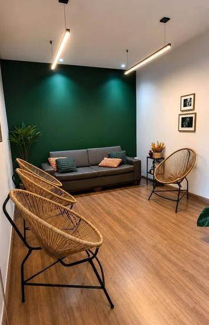
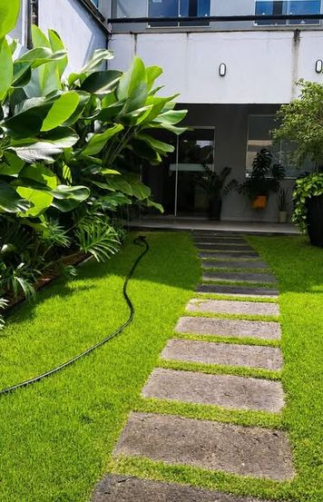
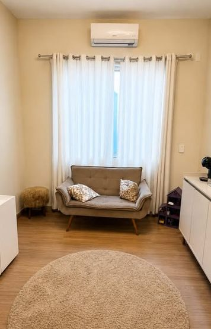
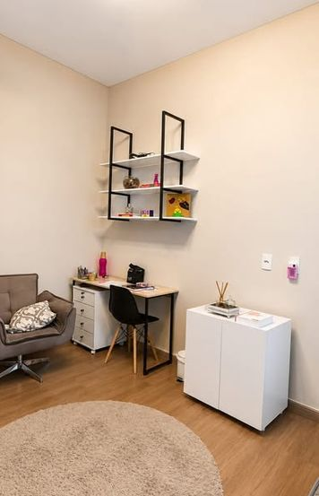
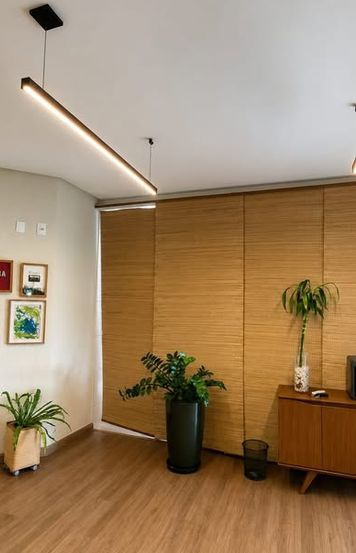
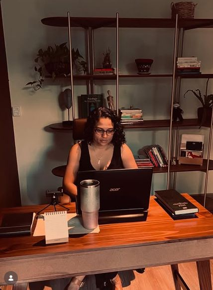

A palavra
Você fala livremente sobre o que vier, sem precisar organizar ou escolher o assunto certo. É pela fala que o trabalho começa.
Psicologia · Psicanálise · Adolescentes, adultos e idosos
Atendimento em psicanálise, online e presencial, com mais de 12 anos de atuação clínica. O primeiro contato é feito direto comigo pelo WhatsApp.
Sobre mim
Sou psicóloga e psicanalista, com mais de 12 anos de atuação clínica. Atendo adolescentes, adultos e idosos que chegam com angústias, sintomas, impasses nas relações ou simplesmente com a sensação de que algo não vai bem e precisa ser falado.
Na psicanálise, a fala é o caminho. Com uma escuta atenta e sem julgamentos, abrimos espaço para que você fale do que sente e do que se repete na sua história, e para que esse sofrimento possa ser elaborado no seu tempo.
A abordagem
A psicanálise parte da ideia de que nossos sintomas e sofrimentos têm sentido, e que esse sentido pode ser escutado. Não há roteiro pronto nem respostas prontas. O percurso é construído a partir do que você traz.
Você fala livremente sobre o que vier, sem precisar organizar ou escolher o assunto certo. É pela fala que o trabalho começa.
Aos poucos, o que antes parecia confuso ou repetitivo ganha contorno, e é possível olhar para isso de outro lugar.
Ao elaborar sua história, você pode encontrar novas formas de se posicionar diante do que te faz sofrer, no seu ritmo.
Para quem é
Não é preciso saber exatamente o que está errado para começar. Talvez seja pra você se:
Como posso te ajudar
Atendo adolescentes, adultos e idosos. Alguns temas atravessam boa parte do meu trabalho clínico.
Os efeitos do racismo no sofrimento psíquico, na autoestima e nas relações, com uma escuta que reconhece essa dimensão.
As marcas que as questões de gênero deixam na forma como cada pessoa vive, se relaciona e é vista.
Do desejo (ou não) de ter filhos até a saída deles de casa, e a reorganização de vida que cada uma dessas fases pede.
Para desfazer dúvidas
A sessão parte do que você traz hoje. A história aparece quando faz sentido, sem roteiro e sem obrigação de divã.
Muita gente procura análise para se entender melhor, atravessar uma fase ou cuidar de algo antes que pese mais.
A escuta acontece pela palavra, e a palavra chega pela tela também. O sigilo e o cuidado ético são os mesmos.
A analista fala, pergunta e intervém. Ela só não dá respostas prontas, porque as suas respostas têm mais valor.
Como funciona
O agendamento é feito exclusivamente pelo WhatsApp. Conte brevemente o que te traz e se prefere online ou presencial.
Eu retorno com os horários disponíveis, o valor da sessão e as orientações para o primeiro encontro.
Um primeiro encontro para nos conhecermos e você contar o que te traz.
Onde atendo
Sempre Viva · Psicologia e Psicanálise






Escritos
Reflexões curtas sobre temas que aparecem no consultório. Exemplos de títulos para o blog.
O que muda na vida de uma mulher quando a rotina deixa de girar em torno dos filhos.
Como as experiências de racismo aparecem no sofrimento psíquico e por que precisam ser escutadas.
Uma conversa simples sobre o lugar da palavra no trabalho analítico.
Dúvidas frequentes
Sim. O sigilo é um dever ético previsto no Código de Ética Profissional do Psicólogo e vale para tudo o que é conversado nas sessões.
Você fala livremente, e eu escuto com atenção ao que se repete, ao que surpreende e ao que fica nas entrelinhas. Não há tarefas nem um assunto obrigatório. Cada sessão parte do que você traz naquele dia.
Na maioria dos casos, uma vez por semana. A frequência é combinada entre nós conforme o seu momento.
Sim. O atendimento online segue as mesmas regras éticas do presencial e é regulamentado pelo Conselho Federal de Psicologia. Você só precisa de um lugar reservado e boa conexão.
O valor é informado pelo WhatsApp, junto com os horários disponíveis. É uma conversa simples e sem compromisso.
O atendimento é particular. Emito recibo para que você peça reembolso ao seu plano, se ele oferecer essa opção.
Mande uma mensagem pelo WhatsApp. Respondo assim que possível, em horário comercial.